Player & Team Administration
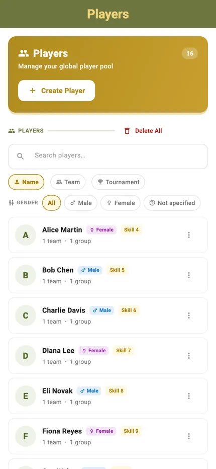
Type a name once. Players, teams and groups are saved on the device and available in every mode, so setting up next week's session is a matter of picking people rather than typing them again.
It all works with no account and no signal — the library lives on the phone. When you do need it elsewhere, it exports to an Excel file and imports back.
Best for
- Clubs running the same faces every week
- Events big enough that typing names at the net is not viable
- Anyone who has re-entered the same twelve players four sessions running
Players
The searchable library of everyone you have ever entered, with what they belong to and what they have played.
The Players hub
Every saved player in one list, filterable by name, team or tournament. Each entry shows how many teams, groups and tournaments they belong to.
The whole list
Scroll the library, edit or delete inline. This is the screen a club with sixty members actually lives in.
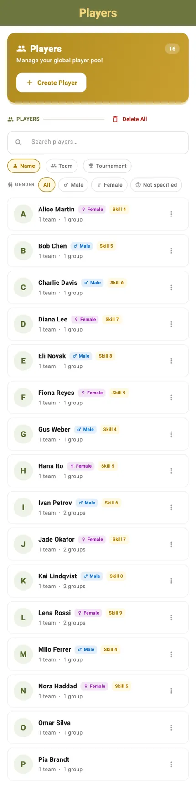
Create a player
Add a name — or take a suggested one — and optionally assign them to existing teams and groups at the moment of creation.
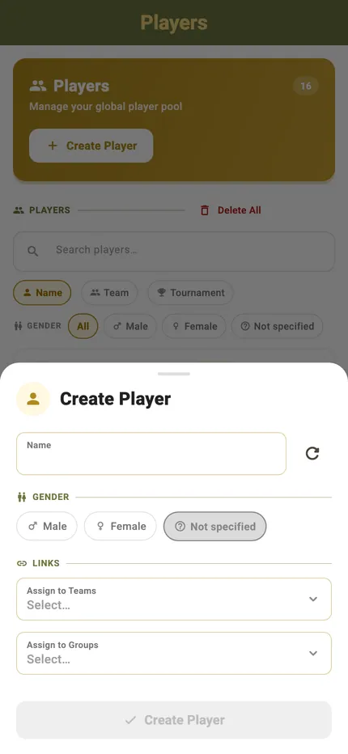
A player's detail
What they belong to and what they have played, with everything editable from the same screen.
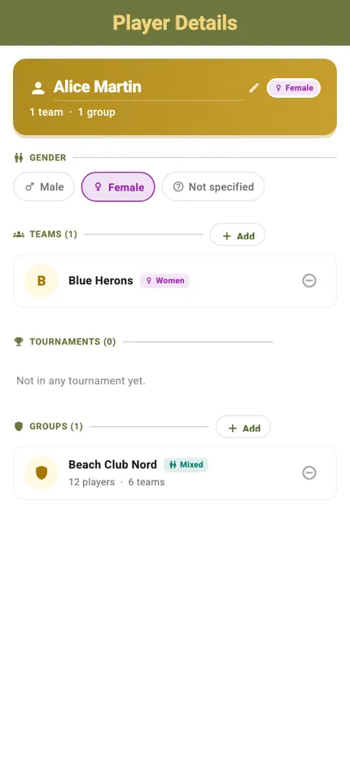
Assign to a team
Put an existing player into an existing team without going through either hub — the assignment works from both ends.
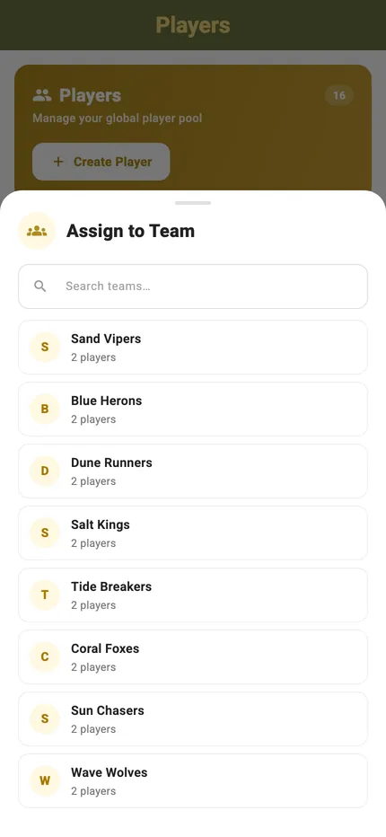
Add players in-game
During tournament setup, Add Existing Players opens the same library with search and group filter, and a counter tracking the spots left.
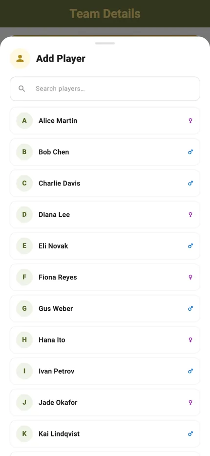
Teams
Pre-formed pairs and squads, stored with their rosters, ready to drop into any bracket format.
The Teams hub
Every saved team, browsable by name, player or tournament, each showing its player count and group membership.
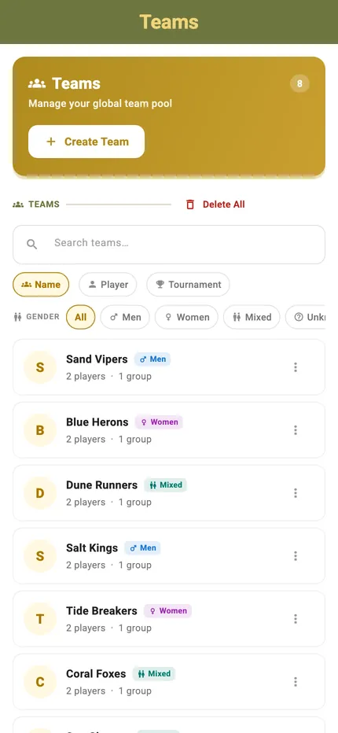
Create a team
Name it, link it to existing player profiles, and assign it to one or more groups. It is immediately available in Add Existing Teams across every bracket mode.
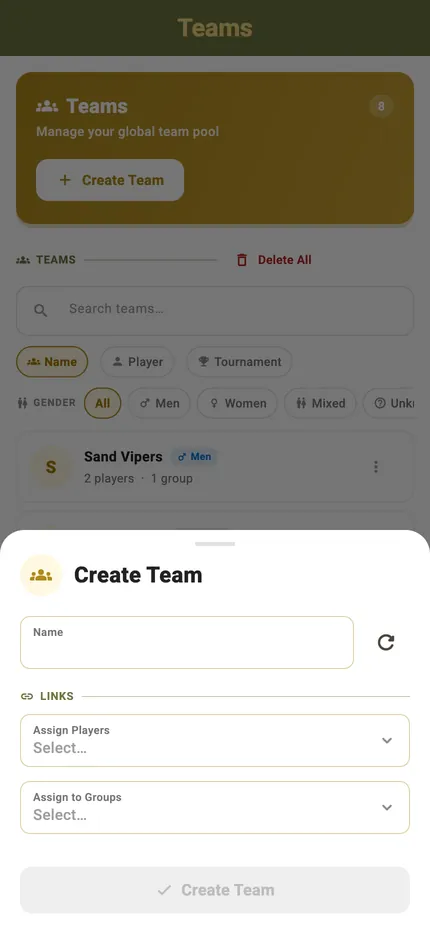
A team's detail
The roster, the groups it belongs to and the events it has played, all editable in place.
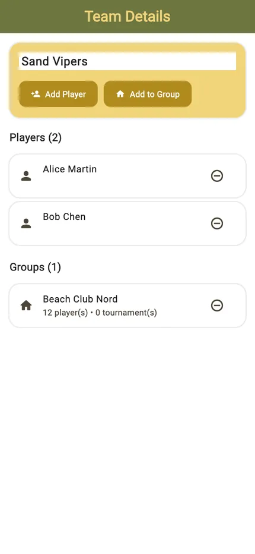
Groups
A club, a venue, a Tuesday night regulars list. Groups are how you avoid scrolling past everyone else to find the eight people who actually turned up.
The Groups hub
Every group you have made, with what belongs to it. A player or a team can be in several at once.
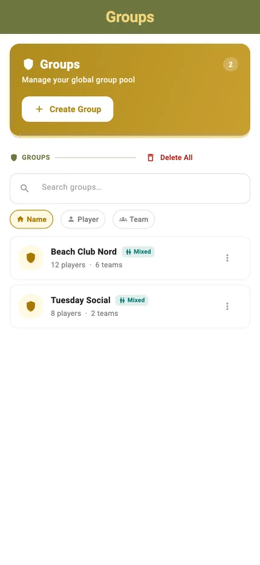
Create a group
Name it and add the players and teams that belong to it — a club, a venue, or a recurring series.
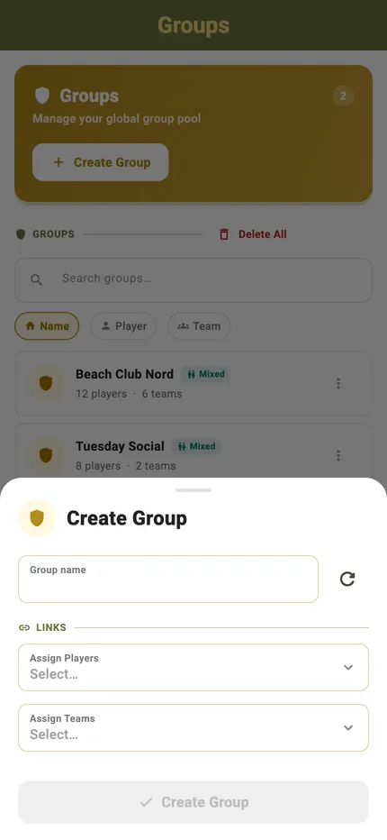
A group's detail
Its members, and the filter that makes setup fast: pick the group during tournament setup and add its people in a few taps.
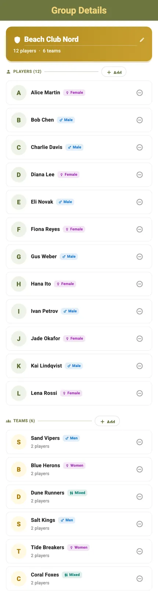
Every administration feature
Includes exporting your players, groups and teams to an Excel file and importing them back — on this device or another one.
-
Available
Reusable player & team library
Players, teams, and groups are saved once and available in every mode — Quick Games, Social Scrambles, Kings of the Court, Doghouses, and Eliminations. No re-entering names each session.
-
Available
Players hub with search & filters
Every saved player in one searchable list, filterable by name, team, or tournament. Each entry shows how many teams, groups, and tournaments the player belongs to, and can be edited or deleted inline.
-
Available
Create players
Add a player with a name — or a suggested one — and optionally assign them to existing teams and groups at the moment of creation.
-
Available
Export & import players, groups & teams
Export your player, group, and team data and import it back — or onto another device — so setting up a bigger event doesn't mean re-entering every name by hand.
-
Available
Teams hub with saved rosters
Pre-formed teams are stored with their player rosters and can be browsed by name, player, or tournament. Each entry shows the player count and group membership.
-
Available
Create teams
Name a team, link it to existing player profiles, and assign it to one or more groups. It is immediately available in the Add Existing Teams list across all bracket modes.
-
Available
Groups for clubs, venues & series
Organise players and teams into groups that represent a club, a venue, or a recurring event series. A player or team can belong to several groups at once.
-
Available
Group filtering during setup
Every player and team import panel offers a group filter, so a club session can be set up by filtering to that group and adding its members in a few taps.
-
Available
Add existing players in-game
During tournament setup, Add Existing Players opens the full saved library with search and group filter. Tap + on any name to add them, with a counter tracking the remaining spots.
-
Available
Add existing teams in-game
In bracket modes, Add Existing Teams lists all saved teams with their player counts. Adding a team loads its player names automatically, ready to appear on scorecards.
-
Available
Inline player import in Quick Games
Each player slot in a Quick Game team has a search icon that opens the Players Hub inline — find a saved player and drop them straight into the slot without leaving the screen.
-
Available
Edit players in ongoing tournaments
inline editing (quick game) or via tournament player management
-
Available
Stored on the device, no account needed
The whole administration library lives locally on the device and works without an internet connection or a sign-up.
-
Available
Add Random Players or Team
Too Lazy to set up actual Players or teams? Let the system create random Players and Teams for you.
Managing a club roster in TournaQ and hitting a limit? Tell us what you are trying to do.